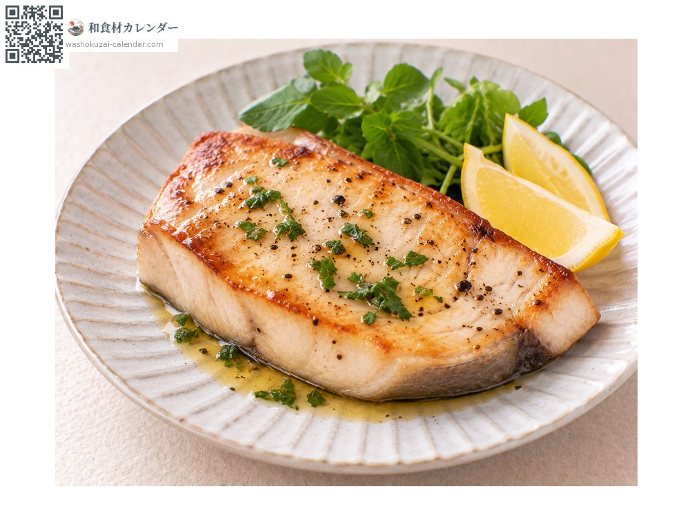
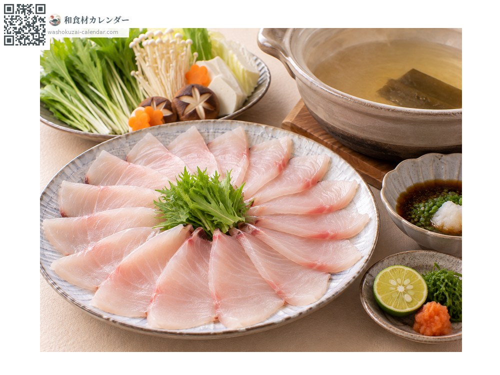
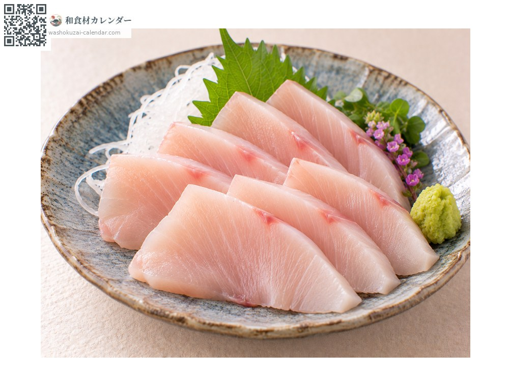
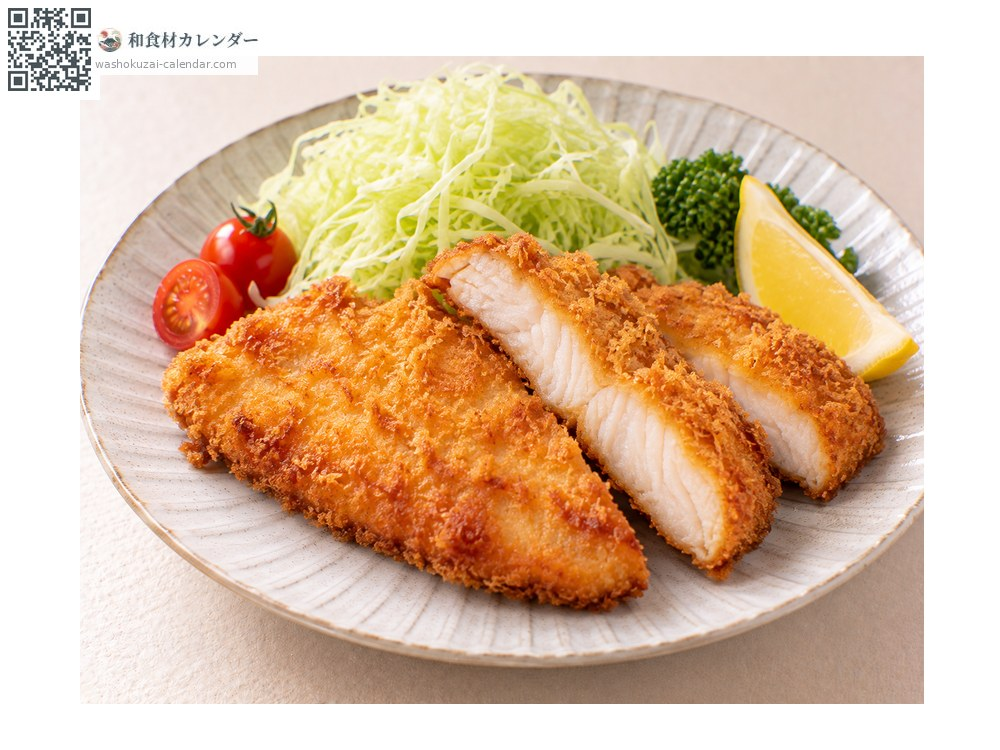

魚介
カジキマグロ
かじきまぐろ
別名・別表記旗魚、カジキ、メカジキ、めかじき、kajikimaguro、kajiki、mekajiki
旬は1月・2月・11月・12月

旬の時期
1月
2月
3月
4月
5月
6月
7月
8月
9月
10月
11月
12月
旬出回り
調理法

ステーキ
厚切りにして焼く。淡白な身に洋風の味付けが合う。

しゃぶしゃぶ
薄切りを熱い出汁にさっとくぐらせる。脂が程よく落ちて上品になる。

刺身
マカジキは生でも。淡いピンクで上品な味わい。

フライ
衣をつけて揚げる。クセがなく食べやすい。
選び方
切り身は身が淡いピンクで透明感があり、血合いが鮮やかなもの。ドリップが出ていないもの。
保存方法
切り身は水気を拭いてラップで包み冷蔵。2日以内に使い切る。冷凍も可能。
主な産地
豆知識
マグロと付くがマグロ属ではなく、マカジキ科やメカジキ科の魚。長く伸びた上あごが特徴で、これで獲物を叩く。メカジキは脂が多く身が柔らかで切り身の主流、マカジキは身が締まり刺身に向く高級魚とされる。